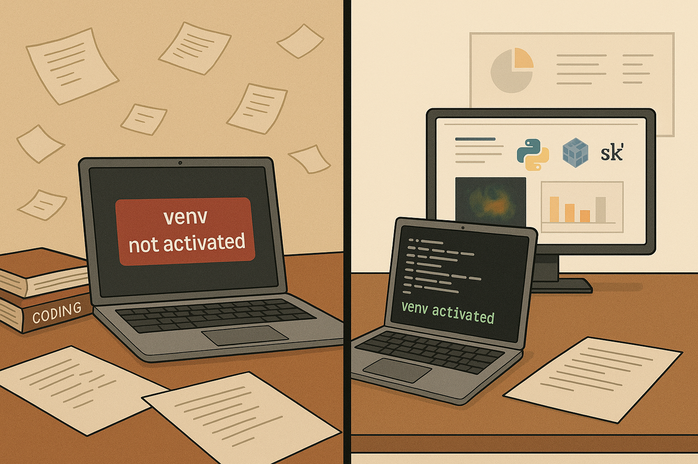

Virtual Environments in ML Projects: Are They Worth the Effort?


Introduction
Many beginners (including me 🤘🏽🤦🏽♂️) in data science and machine learning often rush into building models without laying the foundation for a clean, maintainable, and scalable workflow. In this post, I’ll walk you through why setting up a virtual environment and organizing your ML project files isn’t just helpful it’s essential.
Whether you’re a beginner or not, these practices will keep your projects healthy as they grow.
{Source: ChatGPT, height=500px, width= 1000px}
Learning the Hard Way
I didn’t come from a traditional programming background. I didn’t learn about virtual environments or project organization in a classroom or bootcamp. For the longest time, I was just running pip install in the global Python environment and saving my files wherever they felt convenient.
And guess what? Everything seemed fine… until it wasn’t.
When I was working on a real-world machine learning project for a client, I had to:
- Use specific versions of packages (example: pandas and scikit-learn)
- Debug code that worked on my machine but failed on the client’s server.
- Share my work with another data scientist who couldn’t run any of my code.
It was chaotic.
I was neck-deep in bugs, broken dependencies, and messy file structures. And there was no turning back, I had to fix it all in a short time.
That’s when I discovered virtual environments and structured project setups, not from a course, but from necessity. It wasn’t theory. It was survival.
Set up a virtual environment and organize your folders even if you’re just experimenting. it doesn’t seem urgent, until it is.
Why This Matters
1. Dependency Isolation
Have you ever installed a library for one project, only to find that it breaks another one? That’s dependency hell. Virtual environments let you isolate dependencies for each project, so you can use different versions of the same library in different projects without conflicts.
2. Reproducibility
Imagine trying to run a project six months later and nothing works. Why? Because the environment changed. Virtual environments + a requirements.txt file = perfect reproducibility.
3. Cleaner Code and Collaboration
Structured code is easier to debug, scale, or share with teammates.
Setting Up a Project the Right Way
When starting a new project, it’s good practice to keep all your files organized in their own folder. Here’s how you can create a folder and move into it using your computer’s command line interface.
1: Open your terminal or command prompt
- On Windows, search for Command Prompt or PowerShell and open it.
- On macOS, open the Terminal app.
- On Linux, open your terminal application.
2. Create a project folder
mkdir ml_project
cd ml_projectmkdir ml_project Creates a new directory (folder) named ml_project in your current location. mkdir stands for make directory.
cd ml_project Changes your current working directory to the newly created ml_project folder. cd stands for change directory.
3. Create and Activate a Virtual Environment
python3.12 -m venv venvRunning python3.12 -m venv venv does not install Python 3.12, it simply uses that version (if already installed) to create the virtual environment. You’ll need to install Python 3.12 manually on your system before using this command.
Let’s break down what each part means:
python3.12: This specifies the Python interpreter you want to use for creating the virtual environment. In this case, it’s explicitly telling your system to use Python version 3.12. If you just used python or python3, it would use your default Python installation.
-m: This flag stands for “module.” It tells the Python interpreter to run a specified module as a script.
venv: This is the name of the module that Python provides for creating virtual environments.
venv (the second one): This is the name you are giving to your new virtual environment directory. a new directory named venv will be created in your current working directory. This directory will contain a copy of the Python interpreter, pip, and other necessary files for your isolated environment.
the command python3.12 -m venv venv does the following:
- It uses the Python 3.12 interpreter.
- It runs the venv module.
- It creates a new directory named venv (the second venv in the command) in the current location. - This directory will house your isolated Python environment.
After creating a Venv, you would typically activate the virtual environment
source venv/bin/activate # macOS/Linux
#venv\Scripts\activate # WindowsTo verify if a Python virtual environment (venv) is activated, check if your terminal prompt is prefixed with the environment’s name (e.g., (venv)). make sure that it is activated before installing any packages.
4: Install Essential Packages
#Single package at a time
pip install numpy
# Multiple packages at once
pip install pandas matplotlib scikit-learnpip: This stands for “Pip Installs Packages.” It is the standard package installer for Python.
- pip manages Python packages that aren’t part of the standard library.
- You should use pip whenever you need external Python packages for your projects.
- You can install and uninstall packages with pip.
- You use requirements files to manage projects’ dependencies.
To install multiple Python packages like numpy, pandas, matplotlib, and scikit-learn, you simply list them separated by spaces, no commas needed. pip install pandas matplotlib scikit-learn
5: Freeze Your Environment
Once you’ve installed all the necessary libraries and your application is working as expected, freezing the environment creates a snapshot of those dependencies. This is like a “checkpoint” for your project’s environment.
pip freeze > requirements.txtEvery time you add a new package with pip install or remove one with pip uninstall, it’s a good practice to update your requirements.txt file to reflect the current state of your virtual environment.
For robust project setups, use Poetry instead of pip as it offers integrated dependency management and automatic lock files (poetry.lock). Poetry
6. To replicate the environment later by you or others
pip install -r requirements.txtThis command automates the process of setting up a project’s Python dependencies. Instead of manually running pip install for each package, you can just run this one command, and pip will install everything your project needs, often with the precise versions required for compatibility. This is crucial for reproducible development environments.
Why Project Structure is Important
A clear and consistent project structure makes your code easier to understand, reuse, and maintain not just for others, but for yourself in the future. It helps separate different parts of your work like data, scripts, and notebooks, making your project more organized and scalable.
You don’t have to over-engineer, but a minimal structure with folders like src/, data/, and notebooks/ is a low effort way to stay organized.
mkdir -p ml_project/{data,notebooks,src,models} #creates multiple directories at once
Now, your ml_project should look something like this
ml_project/
├── data/ # Raw or processed datasets
├── notebooks/ # Jupyter notebooks for EDA
├── src/ # Source code / scripts / modules
├── models/ # Saved model files
├── venv/ # Virtual environment
├── requirements.txt # Package listSetting up a clear and organized project structure might feel like an extra step at the start, especially for small or experimental projects. However, it lays a strong foundation that helps you stay organized, makes your work easier to maintain, and prepares you for scaling up or collaborating with others.
Conclusion
Using a venv isn’t just a good practice it’s essential. It keeps your project dependencies isolated, prevents “dependency hell”, and ensures your code behaves consistently across machines. I’ve learned this the hard way as someone who didn’t come from a programming background, it wasn’t until I hit painful roadblocks in a real-world client project that I realized the value of proper environment management.
While model accuracy often takes the spotlight, it’s only one part of the bigger picture. Reproducibility, collaboration, and maintainability are just as important especially when your work moves from personal projects to production or team settings.
What’s Next: Getting Started with Git & GitHub
Now that we’ve seen how important it is to structure your ML projects and isolate your environments, the next natural step is version control — and that’s where Git and GitHub come in.
In my next blog post, I’ll talk about:
- What Git actually is and why it’s essential
- Setting up a GitHub repository for your project
Resources
Connect with Me
I use AI tools to assist in writing and drafting some of the content on this blog. but all content is reviewed and edited by me for accuracy and clarity.
💬 Comments